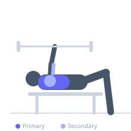

Exercise guide / Pin Press / Anderson Bench Press
Pin Press / Anderson Bench Press
The Pin Press starts with the barbell resting on the safety pins of a power rack at a predetermined height, eliminating the eccentric phase and any stretch-shortening cycle contribution. Each repetition begins from a dead stop, training maximal concentric pressing force from the most difficult position in the range of motion.
Primary muscles
pectoralis major sternal
pectoralis major clavicular
Secondary muscles
triceps lateral head
triceps medial head
deltoid anterior
Stabilizers
subscapularis
pectoralis minor
Equipment
Standard Barbell
Power Rack (Squat Cage)


Starting position
- Set the safety pins inside a power rack so the bar rests at the desired starting height (chest level, mid-ROM, or near lockout). Lie under the bar and position yourself as for a bench press.
Setup
- Set pins at the desired height. Rest the bar on the pins. Lie on the bench under the bar, establish contact with the bar, retract the shoulder blades, brace the core.
Steps
- Step 1: Position hands on the bar at the chosen grip width while it rests on the pins.
- Step 2: Take a full breath, brace, and press the bar off the pins from a dead stop.
- Step 3: Drive to full lockout.
- Step 4: Lower the bar back to the pins with control. Reset and repeat from a dead stop — do not bounce off the pins.
Coaching cues
- Treat every rep as a max effort single
- Pull the bar apart and try to bend it before you press
Breathing
- Breathe and brace before each rep. Exhale at lockout. Reset breath between reps.
Range of motion
- Partial ROM from pin height to lockout. Set pin height to match your specific sticking point.
Tempo
- 0-1-X-0 (dead stop start, explosive press)
Common mistakes
- Bouncing the bar off the pins rather than pressing from a true dead stop
- Setting pins at a height that is too low, reducing the specificity benefit
Safety
- The power rack is mandatory — this exercise cannot be performed without one
- Start conservatively with load; there is no elastic energy to assist the initial drive
Training
- strength: 1–5 reps
- strength: 3–6 sets
- Rest: {'strength': 240}